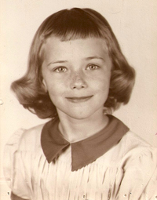

Something About the Author
By Barbara Shoup
1.
Every evening, I wait at the back door for my father to come home from work. My heart lifts when I see him turn the corner from the bus stop and start down the alley. He is so handsome, I think. My mother is busy in the kitchen; my brother is busy playing. But I wait. I am always the first one he sees.
This is my first reliable memory, and in it I am probably four. It is such a small memory, no more than a moment; yet it carries an image of my father that I have come to believe has everything to do with why, forty-five years later, I am a person who needs to write stories. It is both pleasure and pain to see him in my mind’s eye as he was then: young, handsome, smiling. Mine.
But first setting out to write this piece about my life, I began this way: I was the first of four children born to Richard and Gladys White, who met and fell in love during World War II, in England. He was ten years older than she, an avid golfer with a taste for liquor and good times. She loved to dance. She’d once won a ballroom dancing competition in London, having sneaked out after her father forbade her to enter it. By the time they met at the Golden Lion Pub in Newmarket, she’d left home and joined the Women’s Auxiliary of the Royal Air Force. She’d bicycled into town after her shift as a telephone operator that night; my father had come from the American army base at Bury St. Edmonds on a troop bus.
At the end of the war, my father returned home to Hammond, Indiana to divorce the woman he had married only shortly before he left to go overseas. Then he went back to England, married my mother, and brought her to Indiana. I was born May 4, 1947, their first wedding anniversary. A year later, my mother took me to England to visit her family--the only trip home she would take until her mother’s death in 1964. During those early years, my father was employed as a retail clerk in a jewelry and pawn shop. Later, he worked as a payroll clerk for various construction companies. My mother stayed at home to take care of me, and eventually my brother and two sisters--Jim, Jackie and Diane.
Facts: true and useful in their own way. But where in them was anything that made the child I once was come alive? Nowhere. So I stopped and thought awhile, which is what a lot of writing actually is. I closed my eyes, let the images float up, and pretty soon I saw myself standing in the doorway, waiting for my father. Then an idea popped into my head, and I wrestled with it, trying to find just the right words to get it on the page. There are two kinds of personal history. One is your factual history, you in the real world: when and where you were born; who your parents were; what your family was like and how you lived. The other is your emotional history, you in your head. This history is made of memories: what remains of all the large and small things that happened to you, the ways in which what you remember served to shape your particular point of view. The difference between these two histories is, perhaps, the same as the difference between the plot of a story and the story itself.
I started over...
2.
Every evening, I wait at the back door for my father to come home from work. My heart lifts when I see him turn the corner from the bus stop and start down the alley. He is so handsome, I think. My mother is busy in the kitchen; my brother is busy playing. But I wait. I am always the first one he sees.
Sometimes we get to go downtown, to the store where he works. It is full of wonderful things: big wooden radios with speakers that look like open mouths, cameras, guitars and saxophones, heavy silver candlesticks. There are bracelets, rings, brooches and necklaces made with diamonds. My father puts them on a black velvet cloth and uses something that looks sort of like half of binoculars to look at them. He has to scrunch up his face to hold it on his eye, and I think that’s funny. I like it when he lets me play on the typewriter in the office. I like the clattering sound of the keys and the way the bell rings when the letters they make have filled up a whole line. I can’t read or write yet, but I type away, pretending I can.
We go to Roth’s Tavern for lunch and Mrs. Roth comes out of the kitchen to see us. Once, afterwards, we get to buy new shoes. In the shoe store, there’s a special machine that they use to measure your feet. I stand up straight, like the saleslady tells me to. I stick my foot--the new shoe on it--beneath the screen, and I can see an outline of bones, like the bones on a Halloween skeleton, but green as leaves. My bones, I think. This scares me, but I don’t exactly know why.
We take the bus when we go to see my father, but we walk to the grocery store. Our new new baby sister, Jackie, is too little to sit up in the wagon with my brother and me, so my mother pushes the baby buggy in front of her and pulls the wagon behind her the two blocks to the grocery store. When we get there, we leave the wagon outside the door, the way we always do. Inside, one of the check-out ladies says, “Just leave the baby here, hon. We’ll keep an eye on her while you shop.” So we go up and down the aisles, Jim and I begging for pink snowballs, ice cream, candy bars. At the check-out, we beg for a dime to ride the mechanical horse. “No, no, no,” my mother says, getting out the money to pay for what she has bought. She settles us in the wagon with the groceries, and we set out for home. Suddenly, she stops and drops the wagon handle. It clunks on the sidewalk. “The baby!” she says. “You kids stay right there.” And she turns and runs back up the street. I start to cry. People steal babies, I know. And children like me and Jim are kidnapped by men who drive up and offer them candy. My mother always says, never ever talk to strangers. Even if they're nice. All the ladies in the store are nice. Our baby is only three weeks old. She can't even see right yet, my mother said. So how will she know the difference if one of those ladies steals her and takes her home? She’s not stolen, though. Later, I hear my mother tell my father what happened, and they both laugh so hard the ice tinkles in their glasses. But I don’t think it is funny. I watch my baby sister very carefully after that. I think it is my job.
Sunday mornings, my father drops me off at Sunday school and picks me up when it’s over. Coming home one Sunday, we take a street I’ve never been down before. My father stops the car and a big round man with skin the color of coffee comes down the sidewalk to greet him. “This is my friend, Albert Cherry,” my father says. The man bends over and peers into my window, his face huge. The whiteness of his smile dazzles me. Albert Cherry. I’ve never heard a name anything like that. While he and my father talk, I say it over and over in my mind, like a song.
I have a friend, too. She’s a year older than me and she lets me look at her first grade primer, which she has been allowed to bring home from school overnight. I stand on her front steps looking at the picture of the white house with green shutters, surrounded by a picket fence. I look at the children and their dog. “Dick, Jane, and Sally,” my friend says. “And the dog is Spot.” On another page are the parents. The mother in a neat house dress, baking cookies; the father with his sleeves rolled up, working in the garden. “Want to learn how to read a word?” my friend asks me. “Yes!” I say. She points at one. “This is ‘father’.” I stare hard at the pattern of print on the page. I memorize it. When my mother takes me to the library, I search for it in books. Father. It jumps from the page, like a friend greeting me. Like a promise.
I am so happy when I get to go to first grade myself. We have a special building, all our own, set in the corner of the playground. It has two first grade classrooms and two bathrooms--one for boys and one for girls. In the hallway, there is a long drinking fountain just our size. I love my teacher, Miss Thompson, who has gray hair that she wears in a bun. I love my reading book, I love my desk. I can read many more words than “father” now. I collect words, so many that I can put them in a line and make my own sentences with them, which I read to anyone who will listen.
In the summer, when school is out, I go to the library nearly every day. The children’s section is in the basement. It is a cozy place, light filtering down through the high windows. I feel rich there, sitting at one of the child-sized tables surrounded by books. I wonder how long it will take to read them all. I fully intend to read every single one. I have a library card, my own, which means that I can check out any book I want and take it home. There, for a while, it is mine. The card is pink. It has my name at the top: Barbara White. It has columns of squares and each time I come to the library, the librarian uses up one square to write the number of books I’ve checked out and to stamp the date when they’re due. Then she stamps the same date on the inside back cover of each book. I covet the librarian’s stamp, which is so cleverly attached to her pencil.
I covet my friend, Nancy’s, play house, too. It’s next to her real house, and we play there while our mothers talk and drink coffee in the real kitchen. It is just one room, kind of like a log cabin would have been, I think. The kind in Little House in the Big Woods. It has a child-sized table and two chairs in it. A small rocking chair, a doll crib. A pretend stove and refrigerator. There are white curtains on the windows. One winter evening, Nancy and I pretend we’re two pioneer ladies whose husbands have been scalped by Indians. We rock our poor, fatherless babies, telling them not to be afraid. The Indians will not come for us with their long sharp knives, there are no bears anywhere nearby. Out in the real world, darkness has fallen. A storm is whipping up and the wind begins to howl. A gust rattles the door of the play house, and it sounds just as it would if there were Indians trying to get in and kill us. Or a grizzly bear. Suddenly, my heart is beating wildly and I want to go back to the real house, where our mothers are. “Maybe we should go in,” I say to Nancy, trying not to sound afraid. “I think my mom might be ready to go.” “Okay,” she says. Then we both jump up. She flings the door open and we tear along the narrow sidewalk to her front door, as if we are being pursued.
Another night I stand outside the bathroom door, listening, while my mother bathes my new baby sister. Her name is Diane, but I call her Diny because she is tiny and I like words that rhyme. I hear the water splashing, hear my sister’s delighted cries, and at that moment I want more than anything in the world to be her. It’s not that I’m jealous because she has my mother’s attention--I’m never jealous of her, I adore her. It’s that, suddenly, I realize that I will only ever be myself. I am struck by the terrible unfairness of this. Worse, it occurs to me that, seven years younger, my sister will probably live longer than I do. There will be a time when I will be dead and she will still be alive. This thought frightens me and I feel my heart begin to pound. I cannot imagine not being. I do not want to imagine it. But I cannot help thinking about it, especially at night, alone in my bed, the house dark and quiet all around me.
Summer evenings, my father drives us to the Dairy Queen. My mother sits in the front seat beside him. There is Big Band music on the radio. Bathed, dressed in our pajamas, we four kids sit in the back seat and wait while he goes to the lighted window to get our nickel cones. I love the nightly ritual, I love to lick the cold, sweet curl of ice cream from the top of the cone. Still, I never fail to ask for more than what I know my parents can afford. Why can’t I have a cone dipped in chocolate? A sundae, a milkshake, a Dilly Bar? I feel guilty, unworthy asking for more. I also think, why shouldn’t I be able to have what I want?
Near Christmas, the package from my English grandparents always comes and we are allowed to open it immediately. Inside are packages wrapped in thin, crackly paper with gold edges, nothing like the paper we wrap our own gifts in. Small toys, books, sometimes clothing. And candy. English toffee is my favorite; I trade all my other candy and sometimes even presents for it. It comes in rolls wrapped in red paper. The things in the box from England smell different from anything I’ve ever smelled. Foreign, I think. Which makes me like the idea of foreign, makes me imagine England, as my mother has described it and as I’ve read about it in books. Big Ben, double-decker buses, neat row houses with brass door-knockers that ladies shine every morning. I want very much to see a primrose, a moor.
There are train tracks behind our house, and every evening a passenger train goes by. I stand in the alley and wave, hoping the people on the train will see me and think of me when they get to the places they’re going. New York is my favorite place to imagine. I have the idea that if one of those travelers thinks of me in New York, it will be as if some part of me has been there. I want so badly to see the world, I long for it. Yet every single time I try to spend even one night away from home, I get desperately homesick. I try, but I cannot stay a whole night at a friend’s house--or even with my own cousins. I get a terrible stomach ache and my father has to be called to come and collect me.
I have been to England, but I don’t remember what it was like. I don’t remember my grandparents either. I’ve seen many pictures of them, though. My favorite is the one taken in a gondola car, the Swiss Alps in the background. They had it taken on a holiday to Switzerland. I like that word: “holiday”, the English word for “vacation’. Now they are coming on holiday to America. We all dress in our best clothes to go to the airport in Chicago to meet them, and when they emerge from the gate they look exactly as I thought they would. My grandfather is slim and handsome, with salt and pepper hair. My grandmother is stout and smiling, with pink cheeks and curly white hair. On the way home, I sit in the backseat of the car and listen to them talk and they sound wonderful to me, like music. When my grandmother looks out at the scoop of Lake Michigan shoreline and says, “Oh! It’s ever so lovely!” I feel proud. She has seen Switzerland, after all. And other countries, too. Italy and France. If she says Lake Michigan is lovely, it must be.
On the Fourth of July, we all get up early, so we can get to the street in Whiting where the parade starts. There are floats made of tissue paper flowers; high school bands with crashing cymbals. There are bagpipers, twirlers dressed in spangled costumes, their batons flashing in the sun. We scream at clowns to throw candy our way, salute the old World War I soldiers who are driven past us in gleaming convertibles. When the best of the Whiting parade has passed and there’s nothing left to see but scout troops and legionnaires, my father hurries us back to the car and drives us to East Chicago, and we watch the parade there from the last street on the route. My grandparents like the parades, but they don’t like the fireworks display we go to later. Neither does my mother. It reminds them of bombs falling during the Blitz, and they tell about the time a dud bomb fell straight through their house, making neat, round holes as it went through each storey. If you stood at the spot in the basement where it landed, you could look up and see the sky.
Before my grandparents go back to England, we take them to see our new house. It’s not finished yet, we can’t move into it until the end of the summer, but we can walk around it and look in the windows. It is so small, I can’t imagine how all six of us will ever fit into it. It looks like a monopoly house to me; the neighborhood as flat and uninteresting as a board game. I don’t want to move there. I like our creaky old house, with stairs my Slinky can climb down; I like the little store at the end of the street where I go to buy penny pretzels; I like the rickety old train that runs behind our house to the train yard, and the old man in the caboose who sometimes throws me fat pieces of chalk. And the library, a five minute ride on my bike. Where we are moving, there is nothing but houses, a cornfield, and a swamp. My father will have to drive us everywhere we want to go.
When we finally move into the new house, all the yards in the subdivision are still dirt. The front yards are divided by driveways, but the back yards, yet undivided by fences or hedges, are like one huge back yard. At the end of the street, there are mountains of black dirt. One day, we all have to stay inside when the big tractors come through and plant grass. Then trees are planted: two maple saplings per house, set into the narrow rectangle of lawn between the sidewalk and the street.
There are kids everywhere, most of them younger than I am. From the corner, eight houses down on both sides, I count forty-three. Among them are the Daugherty boys, whom I fear because they burn live snakes in their trash can while their mother’s at work; the Comforti girls, Sandi and Lola, who show me a picture of their dead grandmother in her casket; the Coxes, whom we avoid because their father is a Pentecostal minister and they are always trying to save our souls. Barbara Corrigan is my best neighborhood friend. Her mother knows how to sew, and when sack dresses come into fashion she makes one for each of us. They are orange, made of upholstery fabric. We play dress up a lot. We play with our dolls. But we also like to sneak down to the woods behind the swamp and pretend we are boys. We make a fort, which we divide up into rooms, like a house.
We don’t go to school together, though. She’s Catholic and goes to Our Lady of Perpetual Help School; I’m “public” and I go to Lee. L. Caldwell School. In my old school, I was smart; here I am only new. The smart one is a girl named Patty. She is pale and thin, with black banana curls that are always perfect. She never gets anything wrong. She plays the piano beautifully. She has gone to Caldwell School since kindergarten. In fact, she lives right next door in a white house with green shutters, the kind you always see in reading books. Like most of the other kids who have always gone to Caldwell School, she goes home at lunchtime. The kids from my neighborhood and from the Happy Homes, the next subdivision over, stay for lunch because it’s too far to walk home. There’s no cafeteria, though. There are so many of us new kids this year that they had to turn it into classrooms So we bring sack lunches and eat at our desks, a monitor from the sixth grade watching us.
The cornfield is where the Daugherty boys find the snakes that they burn in their trash can. They are just garter snakes, not poisonous, but I am still scared to death of them, and I hate having to walk along the edge of the cornfield to get home. But I hate walking Parrish Road even more. After the houses on it end, it’s a dirt road, with tall weeds at the edges and scrubby woods beyond. There can be snakes on Parrish Road, too. Worse, there are places where people could hide. This I hadn’t thought of until my mother said, “If you ever, ever see anyone who doesn’t seem to belong there, just run.” Still, it’s a shorter way home and sometimes, when I’m tired or have a lot of books to carry, I take it anyway. Every time I tell myself not to be scared. I start out walking at a regular pace, concentrating on the sound of my footsteps and the buzz and whine of mosquitoes. I glance from side to side, looking for any kind of movement that isn’t caused by the wind. Sometimes I whistle, or sing “Go Down Moses,” a song we’re learning in music. And every time, at the half-way mark, I start to run. I run madly, slipping on the loose dirt, my books bouncing sharply against my chest. When I get to the end, my heart is beating hard--and not only from running. It’s also beating hard because I’m mad. I stand at the top of our double block and look at the long line of houses, all of them virtually the same, and I hate my new neighborhood so much I think that I will die.
We never go downtown anymore because my father has a new job. He works in a trailer on a construction site, and we don’t go there because there’s nothing to see or do. All day he works on an adding machine, adding up the workers’ pay. Sometimes he has so much to do that he can’t play golf on Saturdays. He brings his adding machine home and works at the dining room table, his fingers flying, numbers on narrow white paper curling down to the floor. He is not like the other fathers on our block. He doesn’t wear bermuda shorts; he wears slacks and wing tip shoes, even mowing the yard. He doesn’t barbecue; he doesn’t sit in a lawn chair drinking beer. He drinks whiskey from funny little glasses that I sneak into my room sometimes and use playing with my dolls.
I read anywhere, everywhere: walking home from school; at the dinner table; in the car; in bed, with a flashlight, when I’m supposed to be asleep. I’m never sure when my father will be able to take me to the library, so when he does take me I check out as many books as I can. My favorites are The Boxcar Children, Little House on the Prairie, and Betsy, Tacy and Tib. They are like friends to me; I read them over and over--and the other books in those series, too. The best book in the world, though, is Little Women, and I don’t have to borrow it because I got it for Christmas from my Uncle Joe. It is my most cherished possession: a big, beautiful book, its pages edged in gold. On the cover there is a picture of the four sisters and their mother, singing around the piano. I love everything about their lives: their cozy house, their flower garden. The plays they give in the attic, tea by the fire, lawn parties with croquet. I especially love Jo, the bookworm, who yearns to do something splendid with her life. I love Beth, too, and I read the part where she dies so many times that the book opens naturally to the page that describes her “asleep” at last her narrow bed--a bird singing on a budding bough, snowdrops blossoming, spring sun streaming through the window.
My family gathers around the television. Our favorite show is “The Millionaire.” At the beginning of every episode, a man named John Berresford Tipton delivers a check for one million dollars to some lucky person and the show is about what that person does with the money. My father is snoring on the couch; my mother is knitting. When the show is over, she likes to imagine what she’d do with a million dollars herself. I think about money a lot, and I wish I knew a way to get enough of it so that we could all be happy.
We watch other shows, too. “Father Knows Best”, “The Donna Reed Show”, “Ozzie and Harriet”. It troubles me that my family is nothing like the families on these shows. The television news troubles me, too; especially watching white people shout and even throw things at the Negro children trying to go to school. I love school and it upsets me to think that children could be kept from going to school because of their color. I don’t understand why this is happening, I only know that all the trouble started long ago, when there was slavery.
I write stories and poems in blue notebooks that I buy at the dimestore and keep in a secret place. I will write about slavery, I decide. I will write about a girl my age, escaping the plantation, traveling north by underground railroad. It will be more than a story, though. It will be a whole book, a novel. I come home every day after school, close my bedroom door behind me, and work diligently until I get my story told. It’s forty pages long! I wish I had a typewriter, but I don’t; so I recopy the story in my very best handwriting. When I finish, I draw some pictures to go with it, make a special front page with the title on it: Slave Girl. Then I send it off to a New York publisher whose address I found in the front of a library book. Soon I will be famous, I think. Better yet, rich! I’ll buy my family a new house, a new car. We’ll take a trip to Disneyland, in California.
But then we get to the unit in social studies and I learn that the underground railroad was not a subway train that ran from Atlanta to New York City, as I had imagined it to be. I feel sick at heart, thinking of someone in New York reading my book and laughing. Thankful, though, that I didn’t show it to anybody else. Not my parents, not my teacher. You are too stupid to be a writer, I tell myself. Quit now, before you make a bigger fool of yourself than you already have.
I’ll be a teacher, I decide. My own chalk and red correcting pencils! All the paper in the world! And it is something that I’m already good at: I teach things to my little sisters all the time. It seems an excellent plan to me, but when I tell my mother that this is what I want to do, she looks sad. She tells me gently that to be a teacher, I’d have to go to college, which is something we probably won’t be able to afford. If any of us kids go, it will have to be Jim, she says. College is more important for boys, who are going to grow up and go to work, than it is for girls, who are just going to grow up and get married. But I make up my mind that I am going anyway. I don’t know how. But I am.
Girls aren’t supposed to play baseball either, or stay out after dark. But they can swim. I get ten cents every day, and whenever it’s not raining I spend it to go to the swimming pool at Hessville Park. I’m there when it opens at one o’clock and stay until it closes at four. I wear my swimsuit under my clothes, and when I enter the locker room I take off my shorts and shirt and tennis shoes and put them in the wire basket the attendant gives me. Then I take a freezing cold shower. It’s a rule. The lifeguard won’t let you in the pool if you don’t do it. Shivering, I grab my towel and go outside. From the other locker room, boys are emerging, running as fast as they dare and cannon-balling into the pool. I stand at the edge and dip my foot into the water. Cold. But I know it’s worse to go in a little at a time, so I hold my breath and dive. I come up screaming. Go under again and this time stay under until I am used to it. Then I burst to the surface, shaking water like a seal. I float around a while, my face to the sun, then I test myself to see how far I can swim underwater. I do underwater somersaults. Sometimes I just hold my breath and sit underwater as long as I can, my hair floating out like seaweed. I open my eyes and look at the wavery white legs all around me. I let a little breath out and watch the bubbles rise to the surface. I move my arms and legs, fascinated by the slow drag of the water. It makes me think of those science movies we see at school: the stems of flowers rising out of the earth in slow motion, leaves and then bright petals unfolding.
I stay in the pool until the lifeguards clear it at quarter till four. The tips of my fingers are pruny, my eyes clouded with chlorine. But at supper I beg my parents to take us back for the evening session. Sometimes they do. My father has baggy plaid swim trunks. His neck and face and lower arms are sun-tanned from playing golf, the rest of him is pale as winter. He can’t swim, except underwater. But he doesn’t care. He dives in and swims the short length of the pool underwater, like a fish. My sisters clap their hands. They are sweet, spindly little girls, blond and blue-eyed. They are two years apart, but they look so much alike that they are often mistaken for twins. I like to take them in the water and float them on my arms. I help them hook their hands on the metal bar along the edge of the pool and show them how to practice kicking. When my brother cannon-balls us, my mother yells at him from from the side, where she’s sitting on her towel.
Christmas Eve. We are all dressed up and waiting for my father to get home so we can leave for my Aunt Ruth’s house. Jackie and Diny are spinning on the green chairs in the living room. Usually my mother forbids this, but tonight she lets them spin to their heart’s content. If they are spinning, they are not asking please, please, please can we open just one present under the tree, or when is Daddy coming home so we can go to Aunt Ruth’s and open presents there? I am interested in her distraction: her whispered telephone conversations punctuated with anxious laughter, the way she keeps going to the fogged window, rubbing a clear circle into it and peering out. She jumps when there is a large thump on the roof. Then I hear bells. “Santa!” my sisters shout. They jump up and run around in circles, wild with joy. When the door opens, I recognize my father in a Santa suit. He is a thin man, so he’s had to stuff it with pillows, which are slipping. “Ho, ho, ho!” he says, winking and me and my brother. He takes a black book from his pocket and writes down what my sisters tell him they want. Afterwards, my mother steps outside with him. When he’s gone, she stands at the screen door looking out at a bunch of boys who are fooling around under the streetlight, wrestling and shouting, slipping and sliding in their slick-soled shoes. It is a long time before my father gets back. He’s with one of the neighborhood dads and they’re laughing and disheveled. His breath has an odd sweet smell; he sounds funny, talking. I eavesdrop outside the kitchen and hear them tell my mother that the reason they’re so late is that those boys chased them and they’ve been hiding out in a neighbor’s shed for nearly hour. “The damn pillows slipped,” my father says. “I nearly killed myself!” I don’t know why my mother is so mad at him. Because we’re going to be so late, I guess. Because she knows my dad’s family expects him to botch things up, and now he has.
When I am in the sixth grade, my English aunt comes to live with us because she is getting a divorce. She brings her baby, Billy, with her. Her name is the same as mine: Barbara. I am named after her. She is tall and pretty; she loves clothes and perfume; she is growing her fingernails long. Aunt Barbara has not been at our house very long before she has a boyfriend, who adores her. We babysit when he takes her out to dinner and to the movies. He takes her shopping every month when she gets her support check. All day, while he’s at work, she watches television and plays with her Billy. She never cooks or even does dishes after we eat dinner. My mother works at a department store now, and sometimes my father gets angry because Aunt Barbara does nothing to help her around the house. Once he gets so mad that he throws the glass he’s drinking from and it shatters against the wall. But my mother always says, “Leave her alone. She’s having a hard time, she’s only a girl.” Besides, Aunt Barbara does help, she tells him. She watches us kids when we get home from school. But this is not true. She’s supposed to watch us, but she doesn’t pay any attention to us at all, not even to my sisters.
I hate the arguing, I can’t stand it one more second. Still, I am not exactly running away. I have no money, nowhere to go. I know I’ll have to go home eventually, but not now. I walk the long way to the park and swing on the swings for a while, even though I’m too way old for it. I swing high and think what might happen if I swung so high that I went right over the bar. I could be hurt very badly. If I jumped off right now, at the highest point of the arc, I could break my leg. But I don’t jump off. I drag my feet in the sand until the swing slows down. Then I get off and go crawl under the big bush near the pool. It is cool and dark and private in there, like a little room all my own. I could just stay here, I think, though of course I know I can’t. Through the leaves, I watch my father’s car drive slowly past the park, then back again. He stops near the swings, gets out and stands there looking worried. After all, it’s getting dark. He calls my name like a question. He doesn’t yell at me when I come out from under the bush and walk toward him. He doesn’t say anything, just gets back in car and opens my door from his side. When I get in, he starts the engine and takes me home.
3.
Sometimes the adult I am now travels back to the cramped bedroom of my childhood and watches the determined child I once was, sitting down to write her first novel. I can feel the late afternoon sun pouring in through the window, hear the distant voices of the neighborhood children. Playing Red Rover, maybe, just like children in books. But I don’t care. I sit with my blue notebook open before me, pick up my pen, and enter my own world, the one that I’m making. I don’t yet know it’s wrong. I don’t yet know how hard writing books will turn out to be. I only know how good it feels to be lost in the story.
The adult-me wonders, what if things had turned out differently? I imagine my child-self taking that first novel to the teacher I’ve become.
“Wow!” the teacher-me says, having read it. “You wrote a whole novel! That’s amazing. Not just anyone can sit down and write forty pages, but you did. Listen, you may not realize it, but determination is about 99% of getting a good story written. Just plain stubbornness. And you obviously have that.” The teacher-me stops, looks hard at the child I was. “You might just be doomed to be a writer,” she says.
Me? Doomed to be a writer? I am mortified, ecstatic.
Meanwhile, the teacher-me babbles on. “And what a wonderful imagination you have. To think of the underground railroad as a subway!”“But--” I begin.
“I know, I know, it wasn’t actually like that. But you can change that part. It’s facts, that’s all. Facts are easy. You just go to the library and find out what you need to know to make it right. You’re a curious person, you’ll like doing that. The hard thing is making up the character, and you’ve already done that very well. I could just see that little girl of yours on the train, so scared and worried. She’ll be the same person on the real underground railroad. You’ll just have to re-imagine her traveling by wagon in the dark of night, that’s all.”
“You mean I can do it over?” I say.
“Well, of course you can. Nobody gets a story right the first time. Not even famous writers. Why, Ernest Hemingway wrote the end of one of his books thirty-seven times. Imagine that! And he’s one of the most famous writers in the world. But back to your story--
“Like I said, character is the most important thing, and you’ve got a good one already. It’s obvious that you really care about this little girl and her life. The way she’s been so profoundly affected by the fact that she’s black, the terrible way she’s been treated because of her color. It’s so neat that you decided to write about something that matters to you. All good writers do that. I think half the reason they write at all is because they get so upset by how unfair the world is. Really, it’s caring about something so deeply that makes them stick with with a story so long, to keep on trying until they get it just right. It’s caring about the characters, too--believing in the importance of what they say and do. Caring about painting a picture of their world that makes the story come alive--
“I’ll tell you something,” the teacher-me continues. “Caring is a kind of talent, even though a lot of people don’t think of it that way. Not everybody cares as much about things as you do! I’ve noticed that about you before. I’ll bet that what’s happening to black people right now--today--really bothers you, too, doesn’t it?”
I am brave enough, drunk enough with the pleasure of her approval to say to tell her that what I’ve seen on the television has upset me terribly. The black--or colored, as we said then--children being stoned and shouted at by white people as they tried to go to school.
“Yes, it’s just awful what’s happening,” the teacher-me agrees. “It breaks my heart. You know, I wonder sometimes how it would be if such a thing were to happen right here. That would be an interesting story, wouldn’t it? Imagine your little girl from the 1800’s as a girl now. What would we do, you and I, if we were characters in the story of her coming to our school? Now there’s something to think about! How would the people in our class act?”
She laughs. “Gosh, isn’t it funny? Here we are talking about one story and as fast as we talk, another one starts to come. It would be a great story, though, wouldn’t it? Maybe you’ll try it when you’ve finished working on this one one.”
“But the same character?” I say. “Isn’t using the same character sort of like--well, cheating? Shouldn’t you make up a new one every time?”
The teacher-me waves her hand dismissively. “No, no! That’s the great thing about writing stories. You can pretty much do whatever you want to, as long as you can make the reader believe it. Real writers use the same things over and over. It works out okay because, as they grow and change and learn more things about their world, they discover new ways to see the people they create, new ways to think about the things they care about. Listen, if you think you might want to try that other story, you ought to get your notebook out right now and jot down a few notes so you won’t forget about it--”
By this time, the teacher-me is whipped up into a frenzy about all these possibilities. “Boy, it’s just amazing,” she says. “The way you worry sometimes that you won’t have anything to write about. Then--good grief!--once you get started, the stories won’t stop. You just have to find the time to write them. And the patience to get them down exactly the way you want them to be--
“But you are patient! You’re the one who wrote forty pages. Goodness, you can do anything if you can do that. I’ll bet you’ll write several more really good stories before the year is through. You’ll let me see them, won’t you?”
And I do.
In this fantasy, I keep writing all through grade school and into high school. In time, I see that the best stories grow from pieces of my own life. I learn to look at my life like I teach my high school writers look at their lives now--like any writer must look at anything to write well. Clearly, objectively, yet at the same time feeling my sadness, wonder, grief, confusion, passion, longing, joy. In fact, I look so hard and so well that I begin to see what everyone around me wants desperately to remain unseen. I speak the unspeakable. And when I do, I begin to understand that my chronic sadness, my need to constantly prove myself worthy, my hopeless sense of responsibility for things I can’t control, my yearning to find a place in the world where I belong have everything to do with what has happened to my father. I remember my four-year-old self, waiting for him in the doorway. I remember the way I felt at the sight of him rounding the corner, heading home. A teenager now, I hold this image in my mind’s eye when I look at him sleeping--no, passed out, drunk again--on the sofa night after night, and I allow myself to feel grief for the person he once was, the person now lost to me. It is more painful than feeling anger, but I feel it because I know I need to feel it for my stories. And it doesn’t kill me, as I feared it would, so I go on. I write myself pacing on a Friday night, enraged, while he sleeps on the sofa, the car keys in his pocket. I write, too, the moment I find out that he has sold his golf clubs so I can take the class trip to Washington D.C. and New York. On the page, outside me, these things lose their power.
4.
But I didn’t have that encouraging conversation with a teacher when I was in grade school. Writing didn’t help me face the most fundamental truth of my young life when I was in high school. In fact, when I got my novel back from the New York publisher, I put it away in a secret place. Nearly twenty years passed before I found the courage to write again. More years than that passed before I came to understand what had happened to my family as a result of my father’s alcoholism and how profoundly it had shaped my point of view. But the point here is not to dwell on what I lost. Nothing was lost. Because I write stories, I have use for all that I have seen and felt and known. I can write my young father, bring him to life again as he was, rounding the corner, starting up the alley toward me. Now, mine forever, I can let him go. But it is the moment I see how I can use him in a story that the grief I’ve finally allowed myself to feel wondrously expands into gratitude. I am grateful for having survived my childhood; grateful, too, for having had that childhood. A different, happier childhood would not have made me the person, the writer, I am now. And I like who I am now; I love what my life turned out to be.
5.
I met my husband, Steve, the day I arrived on the Indiana University campus as a freshman. We were married a year and half later. I was nineteen; our daughter, Jenny, was born when I was barely twenty. It took me until 1972, the year our second daughter, Kate, was born, to finish college. By then we had moved to Indianapolis, and Steve was working a day job and going to law school nights. During those years, my day-to-day life was largely unaffected by the political turmoil of the times. I was too busy raising my two small children and trying to finish school to do anything but think about Vietnam and its aftermath. But early in 1974, I learned that a close college friend, a sorority sister, had been identified as a member of the Symbionese Liberation Army, a small band of revolutionaries responsible for kidnapping Patty Hearst, a rich heiress who lived in California. I was shocked by what my friend had done; I knew it was wrong. Yet I envied the passion that caused her to act.
And I began to think about my own life, really think about it. I loved my husband and daughters very much, but I wanted something more than family life, something of my own. I felt deeply conflicted about giving up my role as a full-time mother, but ultimately I decided that I must do it if I was going to be happy.
I applied for elementary school teaching jobs, but couldn’t find one, so I took a job as a van driver for Learning Unlimited, an alternative education program that had just been established at North Central High School. I drove students to community learning sites; later, I became the coordinator of community activities and also an English teacher. Working with Learning Unlimited was a life-changing experience for me. Most of the staff members were young, innovative, and fervently believed in the power of education to shape lives. We declared the whole world our classroom; we declared teachers and students equals, learning in it together. We believed that teenagers were capable of making important decisions about their own lives, and engaged them in the process of planning and executing their own learning experiences. During the time I taught there, teachers and students traveled to New York to look at art; to the Florida Keys to study marine biology; to the Navajo reservation at Rough Rock, Arizona to observe Native American culture. We encouraged students to draw on the resources in our own community to learn what they needed to know.
We made up our own classes and seminars, too. “Writing in the Real World” was one of mine. Once a week, a dozen or so students convened in the program van, and I drove them all over the city in search of stories. We visited a map factory, the women’s prison. We went to a nursing home and talked to people about their lives, watched the local ballet company rehearse. One day, on our way somewhere, several students got to talking about what they planned to do when they grew up.
“What about you?” one asked me.
I laughed. “I am grown up,” I said. “Remember? I’m your teacher.”
He pressed me, as teenagers do. “But is that what you want to do?”
I told him that I loved my job, that teaching made me happy. This was true.
“But did you always want to be a teacher?” he asked. “Is it the only thing you ever wanted to do?”
A little wave of anxiety rippled through me. I couldn’t lie. So I said, as casually as I could, “Oh, once I wanted to be a writer. But that was ages ago, in grade school.”
He looked at me. “Wanted?” he asked. “You don’t want that anymore?”
I shrugged.
“Hmmm,” he said. “You’re always saying, ‘Do it!’ But maybe you really mean we should do it. You’re the teacher, right? You don’t even have to try.”
“Oh, like I have all the time in the world for writing,” I said. “Like I need another job. I have a whole other life besides school, you know. I have a husband. I have kids.”
“It’s not supposed to be easy,” he said, in my voice.
And I knew that if I wanted to retain his respect, If I wanted to retain the right to teach him, to expect his best, I was going to have to become a writer. So I did.
Since then teaching and writing have been intertwined. Within a year after that conversation with my student, I’d written a book about community-based learning, called Living and Learning for Credit. To my amazement, it was bought, published, and even won an award. That gave me the courage to try fiction. I was old by then, or so it seemed to me. Thirty-two. There was no time to diddle around with stories, I thought. So I wrote a novel, a predictable, bland first attempt. But the second, Night Watch, was better. It was bought by Harper and Row, had its three months on the book store shelves and faded into oblivion the way most first novels do. Twelve years passed before the publication of my second novel, Wish You Were Here. Twelve very discouraging years, in which the several novels I wrote were rejected again and again and again. Was I a writer? Was I even worthy to try?
All during those years, I was the writer-in-residence at Broad Ripple High School’s Center for the Humanities. I taught a creative writing class for a while, then developed an independent study course in fiction writing, which allowed me to work closely with about a few students, about ten a year, who were serious about learning to write stories. I expected a great deal of my high school students, and there were plenty of times when the only thing in the world that kept me going as a novelist was the knowledge that I was going to go to school and say to my struggling young writers, It is process that matters. Not money or recognition. Not even publication. A real writer keeps writing because he loves the process. He loves writing itself: what it teaches him about himself, the way it takes him away from the real world into one of his own making. He works, keeps working, because he loves his work--even though what he’s trying to do often seems impossible.
I would quote from memory something I’d read long ago in Iris Murdoch’s novel, The Black Prince. “I live, I live with an absolutely continuous sense of failure. I am always defeated, always. Every book is the wreck of a perfect idea. The years pass and one has only one life. If one has a thing to do at all, one must do it and keep on and on and on trying to do it better.”
If I said all that, didn’t I have to believe it myself? Didn’t I have to keep on? It was a question of integrity. And I did go on, grateful for the terrible awareness that my students were out there just waiting to judge me as one more person in their lives whose subliminal message to them was, “Don’t do as I do, do as I say.” It was a strange lifeline, but one I depended on.
I depend on it still.
Teaching high school, I am saving myself. The self I am now and am becoming. The teen-age self I once was. There is nothing I love more than the moment a true voice is revealed. Nothing more satisfying than to be able to say to a student, Yes! Now this is a story. And to see--literally see--on that student’s face the realization that through painful honesty, hard work, and sheer stubbornness, he has achieved something excellent. Something real. Something that a nasty little voice inside him had tried to convince him that he couldn’t possibly do.
I love teaching for what I take from it as a writer, too: conversations, characters, scenes, details so wonderful and compelling that I could never make them up myself. Much ofWish You Were Here came directly from my teaching experiences. Oddly, though, I didn’t think of it as a book for young adults when I was writing it. If I thought about audience at all, I thought that its audience would be adults who had experienced divorce and would gain some insight into their own children’s lives by reading about how Jackson’s parents’ divorce had affected him. I had misgivings when, after several rejections, my agent suggested trying the young adult market. I feared that the book might be heavily edited, simplified. I feared, too, that the book might be taken less seriously than it would have been if published as a book for adults. As it turned out, though, the young adult market was exactly the right place for it. The book was sold to the first YA editor who looked at it. It was published in 1994, was named the following year to the American Library Association’s list of Best Books for Young Adults, and put my writing career back on track. Another young adult novel, Stranded in Harmony, is due to be published by Hyperion Books for Children in 1997.
6.
So there are some things about me. Much more about me is not here. My cozy house, my flower garden. Winter mornings on a ski hill in Michigan, the tips of the pine trees silver with frost. The way I feel standing before a painting by Vermeer. None of this is here. Not Steve on his Harley, Jenny dancing, Kate taking the gates on the race course so fast it takes my breath away. Nor how, once walking the streets of Paris, the world widens all around me, time dissolves, and for an instant I don’t know who I am. But like the bits and pieces of my childhood, these and other moments of my adult life have made their way into stories.
For instance, in Wish You Were Here, Jackson’s father’s accident and recovery have in them much of the nearly-fatal motorcycle accident my husband had in 1988. I talked Steve up and down the ski slopes he loved the way Jackson took his father back in time and re-lived the vacation they’d taken after the divorce. I had Ellen’s breakdown over the cheese fries. In my mind’s eye, Brady Burton looks exactly like a real kid from our high school who ran away. I have no idea what actually happened to him.
It was not knowing that made me keep thinking about him, made me think, What if? What if? until I began to feel a story form inside me. Imagination is no more than one’s ability to ask this question, after all. Writing fiction is not setting down what you know; rather it is poking and prodding at what you know until it yields something you didn’t know you knew. If there is any formula for writing a story it is this: Take some true thing that interests you--a childhood memory (yours or someone else’s), a newspaper headline or photograph, something you saw glancing out the window as you passed through some podunk town. Apply What if. If you’re lucky, a kind of combustion will occur. A whole world will open up and draw you into it.
For me, this is the real joy of writing books: losing myself in them, forgetting for a little while that life is awfully hard and often painful. While I’m writing, I’m in another world, one made of who I am and what I know. How can I be a stranger there? Yet living in the world of a book teaches me, surprises me, too. I emerge, blinking into the bright light of the real day and I am amazed to realize that I am a smarter, better person, more capable of living my real life for having found myself--again--lost in a story.
Printed here with permission from Gale Research
BARBARA'S BLOG

Read thoughts on books, authorship, teaching, and life on Barbara's blog.
MORE WORK

Browse Barbara's books or read her essays.
CONTACT
Donec id elit non mi porta gravida at eget metus. Fusce dapibus, tellus ac cursus commodo, tortor mauris condimentum nibh, ut fermentum massa justo sit amet risus. Etiam porta sem malesuada magna mollis euismod. Donec sed odio dui.
© Barbara Shoup 2012